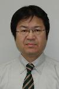

SACSIS 2012 プログラム
7/2基調講演・招待講演・チュートリアル情報
- 基調講演
- 5/16(水) 11:15-12:45：
NECシステムプラットフォーム研究所 技術主幹
妹尾 義樹 氏
「サイバーフィジカルシステムとこれからのコンピューティングについて」
資料ダウンロードスマートフォンやセンサ技術の進展により、実世界および、そこでの人々の活動についての大量の情報をデジタル化し、活用することが可能になって きている。サイバーフィジカルシステム（CPS）は、これらの大量実世界データとサイバー世界の強力な情報処理機能を組み合わせて、人々の暮らし に役立つ知識を生成するとともに、これを用いて、日々の生活をリアルタイムに支援するシステムである。コンピュータシステムは、単体システムとし ては、技術が成熟し、コモディティー化の進行が激しいが、CPSを考えると、リアルタイム処理、分散処理、大量データ処理、セキュリティーなど 種々の課題が山積している。さらには、これら種々の処理を統合して、効率よく扱うための全体アーキテクチャも欠如している。また、CPSを考える とき、汎用の効率化には限界があり、個々のサービスの進展に合わせ、それぞれの特性を活かした最適化が重要となる。本講演では、CPSの現状と今 後、そして、これを支えるコンピューティングの今後の方向性について述べる。
- 5/16(水) 11:15-12:45：
- 招待講演
- 5/17(木) 11:00-12:30：
General Manager of Technical Computing Group, Intel Corporation
Rajeeb Harza 氏
「Intel and Evolution of Exascale」
Intel is emerged as a driving force in the path to Exascale. Intel’s efforts range from collaborating with leading business and technical centers, to researching emerging Exascale workloads, to generating new architectures to make those workloads perform to real world expectations. This presentation looks at Intel’s role in the business and technology of Exascale, now and into the future. Dr. Hazra will review the architectural paths to achieving Exascale, the business challenges of Exascale and the key technical hurdles that must be surmounted to breakthrough. The technical discussion will include a summary of key elements of software and hardware research done by Intel Labs and our Exascale Research Partners, and a glimpse ahead to the tools and technologies that will play a part in the transformation in the next several years.
- 5/17(木) 11:00-12:30：
- チュートリアル:
- チュートリアル1
5/16(水) 14:00-15:30：
 理化学研究所 次世代スーパコンピュータ開発実施本部 開発グループ アプリケーション開発チーム
南 一生 氏
「スーパーコンピュータ「京」におけるアプリケーションの高並列化と高性能化」
資料ダウンロード理化学研究所において、2012年の完成を目指し次世代スーパーコンピュータ「京」の開発プロジェクトが進行しており、2011年にその目標であるLINPACK10ペタフロップスの達成と共にLINPACK TOP500における一位を獲得した。「京」は、日本のスーパーコンピューティング技術を発展させ、わが国の幅広い計算科学分野の利用に供する事はもちろん、大規模システムでは最も重要である低い消費電力、しかもシステム全体での高信頼性を確保できるＣＰＵ開発とそのシステム開発に寄与した。「京」をはじめ世界中でスーパーコンピュータの利用が拡大している中、スーパーコンピュータの性能を十分生かしきるためには、使い方に特有の留意点が存在し、それを解決するスーパーコンピューティング技術が重要である。このため、理化学研究所では「京」開発プロジェクトの一翼として、多様な分野のアプリケーションについてスーパーコンピュータの性能を十分生かしきるために、共通化した手順・手法を用いて、アプリケーションプログラムを高性能化する研究開発を展開している。本チュートリアルでは、「京」の性能向上に寄与するハードウェアの特徴を概説すると共に、「京」開発プロジェクトにおいて得られた、「京」の特徴的なハードウェアを生かしたアプリケーションプログラムの高並列化及び単体CPU上の高性能化のためのノウハウについてチュートリアルする。
- チュートリアル2
5/17(木) 16:00-17:30：
産業技術総合研究所 フェロー
安藤 功兒 氏
「次世代不揮発性メモリ −ノーマリーオフコンピュータはできるか？−」
資料ダウンロード高速で動作する大容量の不揮発性メモリが実現できれば、ワーキングメモリや論理回路が不揮発化され、計算能力が必要な瞬間以外は常に電源が切れている新構造のコンピュータ（ノーマリーオフコンピュータ）ができるのではないかとの”妄想“に魅せられた講演者は、この10年間ほど、磁性メモリMRAMの開発を通じて、その実現を目指してきた。その間、論理演算素子に求められる驚異的な動作速度や、パワーゲーティング技術の出現などに驚かされ続きではあったものの、最近の不揮発性メモリ技術の進展は、ノーマリーオフコンピュータの実現可能性を大きく高めつつあると感じている。講演では、MRAMを中心とする不揮発性メモリ開発の現状を紹介するとともに、そのコンピュータアーキテクチャへの応用可能性に関する素人的な期待を述べ、コンピュータの専門家の皆さんとの議論の糸口としたい。
- チュートリアル1
企業・団体展示
5/16（水）13:00∼18:00，5/17(木) 9:00∼17:30，5/18(金) 9:00∼15:00 の間，常時展示．
展示紹介のためのライトニングトークを初日午後に予定しております．
参加組織および協賛企業一覧（順不同，敬称略）
- 株式会社HPCテック
- 富士通株式会社
- DataDirect Networks Japan
- ローグウェーブ ソフトウェア ジャパン株式会社
- NVIDIA ELSA G-DEP
- 東京工業大学 学術国際情報センター
- タイレラ・コーポレーション
- Appro International, Inc.
- 東京エレクトロン デバイス
- 理化学研究所
- NEC (グリーンプラットフォーム研究所)
- NEC (HPC事業部)
- SCSK株式会社
- 財団法人計算科学振興財団
タウンホールミーティング
5/17（木）12:30∼14:00
SACSIS運営委員会主催で，2日目のランチタイムにSACSISタウンホールミーティングを開催します．すでにメーリングリスト等でご案内しているSACSIS国際化の問題を中心に，SACSIS運営に関する事柄を参加者全員で議論する場となりますので，是非ご参加ください．
SACSIS2012 最優秀論文賞，最優秀若手研究賞
- 最優秀論文賞
-
コンテキストメモリの排除による動的リコンフィギャラブルプロセッサの低電力、省面積化
木村 優之, 天野 英晴（慶大）[受賞理由]>
本論文では、マルチコンテキスト型の粗粒度動的再構成プロセッサにおいて、ダブルバッファを用いたコンテキストメモリ削減機構を提案するとともに、提案機構を効率的に利用するための手法も合わせて提案し、評価している。結果として、性能低下分に見合う、面積削減と低消費電力化を実現していることから、最優秀論文賞にふさわしいと判断した。
-
コンテキストメモリの排除による動的リコンフィギャラブルプロセッサの低電力、省面積化
- 優秀若手研究賞（50音順）
-
競合の再発抑制による LogTM の高速化手法
江藤 正通（名工大）[受賞理由]>
本研究では、ハードウェア・トランザクショナルメモリの１つであるLogTMにおいて、デットロック防止のためにアボートを行う場合にstarving writerと呼ぶトランザクションが発生することによって性能が大幅に低下していることに着目し、それを抑制する手法を提案している。トランザクショナルメモリは今後の重要な技術と考えられる。その競合発生の原因を分析して、簡単かつ効果的に抑える方法を提案したことの意義は大きく、優秀若手研究賞にふさわしいと判断した。 -
GPU による多倍長整数乗算の高速化手法の提案とその評価
北野 晃司（大阪府大）[受賞理由]>
多倍長整数の乗算について、筆算に基づくアルゴリズムを並列実行する新しいアルゴリズムを提案している。 GPU アーキテクチャに合せた最適化を施すことで、暗号計算などに必要とされる桁数の整数乗算に対しては高速な実装が得られたことが高く評価され、優秀若手研究賞にふさわしいと判断した。 -
広域分散ファイルシステムのための適応的な先読み手法
堀内 美希（東大）[受賞理由]>
高遅延環境でのファイルアクセス・スループットの大幅低下を防ぐために，アクセスパターンの分類・検出と帯域遅延積の推定による適応的先読み手法を提案している．シンプルながら独創的な組み合わせにより実環境での性能向上が実現されており，今後の発展も期待されることから，優秀若手研究賞にふさわしいと判断した．
-
競合の再発抑制による LogTM の高速化手法
SACSIS2012 ポスター賞
- 優秀ポスター賞（2件，50音順）
-
FPGA によるメニーコア・プロセッサSMYLEref の評価環境の構築
グェンチュオン ソン，レイジャオ，近藤正章（電気通信大学），平尾智也，曽我武史，井上弘士（九州大学）[受賞理由]
* メニーコアプロセッサ研究のツールとして、SMYLErefとFPGAを用いた評価環境を構築し、その初期評価結果をまとめている。
* ボードをまたいだ共有メモリの実現、OpenCLコンパイラなど、プロジェクトとしての努力量が評価できる。 -
I/O Performance Isolation on A Shared Storage System for MPI-IO Applications
Tanimura Yusuke（AIST），Filgueira Rosa，Atkinson Malcolm（University of Edinburgh），Kojima Isao(AIST)[受賞理由]
* I/O資源を予約しI/O性能を保証するという研究で, ファイルシステムの実装, PSpacerを用いたネットワーク帯域の共有, I/Oスケジューラの実装など, 技術的に高度なシステムを実装している.
* 実用性の高いシステム作りを着実に進めていることがよく伝わってくる。
-
FPGA によるメニーコア・プロセッサSMYLEref の評価環境の構築
- 学生優秀ポスター賞（1件）
-
メニーコアアクセラレータに対するファイルI/O 機構
松尾勇気，下沢拓 (東京大学)[受賞理由]
* Intel MICなどの今後重要となるアクセラレータから、ファイルI/Oを可能とする複数の方式を提案・評価している。
* 新しいコンピュータ構成に関する課題に取り組んでおり、議論のための結果も出ている。
* 説明がとても分かりやすく、重要な仕事だと思う．
-
メニーコアアクセラレータに対するファイルI/O 機構
セッション構成
| 2012年5月16日(水) | |||||
|---|---|---|---|---|---|
| 時間 | 3F会場 (国際会議場301) | 4F会場（会議室401+402） | 3Fラウンジ | ||
| 11:00-11:15 | 開会の辞 最優秀論文賞、優秀若手研究賞表彰 |
||||
| 11:15-12:45 | 基調講演: [3-1] 妹尾 義樹（NEC システムプラットフォーム研究所） 「サイバーフィジカルシステムとこれからのコンピューティングについて」 (座長: 横川 三津夫（理研）) |
||||
| 12:45-14:00 | 昼食休憩 | 13:00-18:00 企業・団体展示 |
|||
| 14:00-15:30 | チュートリアル 1: [3-2] 南 一生（理化学研究所 次世代スーパコンピュータ開発実施本部） 「スーパーコンピュータ「京」におけるアプリケーションの高並列化と高性能化」 (座長: 櫻井 隆雄（日立）) |
||||
| 15:30-16:30 | ポスター展示インデキシング [3-3] ポスター発表(41件) 企業展示発表(14件) |
||||
| 16:30-18:00 |
ポスターセッション 企業・団体展示 |
||||
| 18:00-19:00 |
京コンピュータ見学会 |
||||
| 2012年5月17日(木) | |||||
| 時間 | 3F会場 (国際会議場301) | 4F会場（会議室401+402） | 3Fラウンジ | ||
| 09:00-10:30 | ストレージ [3-4] 一般論文(3件) |
メモリアーキテクチャ [4-4] 一般論文(3件) |
企業・団体展示 | ||
| 10:30-11:00 | 休憩 | ||||
| 11:00-12:30 | 招待講演: [3-5] Rajeeb Harza（Technical Computing Group, Intel Corporation） 「Intel and Evolution of Exascale」 (座長: 工藤 知宏（産総研）) |
||||
| 12:30-14:00 | 昼食休憩 タウンホールミーティング |
||||
| 14:00-15:30 | リコンフィギャラブルシステム [3-6] 一般論文(3件) |
ミドルウェア [4-6] 一般論文(3件) |
|||
| 15:30-16:00 | 休憩 | ||||
| 16:00-17:30 | チュートリアル 2: [3-7] 安藤 功兒（産業技術総合研究所） 「次世代不揮発性メモリ −ノーマリーオフコンピュータはできるか？−」 (座長: 嶋田 創（奈良先端）) |
GPGPU [4-7] 一般論文(3件) |
|||
| 17:30-17:45 | 懇親会準備 | ||||
| 17:45- |
懇親会 |
||||
| 2012年5月18日(金) | |||||
| 時間 | 3F会場 (国際会議場301) | 4F会場（会議室401+402） | 3Fラウンジ | ||
| 09:00-10:30 | 分散P2P [3-8] 一般論文(3件) |
HPCシステム [4-8] 一般論文(3件) |
企業・団体展示 | ||
| 10:30-11:00 | 休憩 | ||||
| 11:00-12:30 | プロセッサアーキテクチャ [3-9]一般論文(3件) |
プログラミング言語 [4-9]一般論文(3件) |
|||
| 12:30-13:45 | 昼食休憩 (SACSIS運営・組織・PC委員会) |
||||
| 13:45-14:15 | 省電力システム [4-10] 一般論文(3件) |
||||
| 14:15-15:15 | グラフ [3-10] 一般論文(2件) |
||||
| 15:15-15:30 | 休憩 | ||||
| 15:30-16:30 | 低消費電力アーキテクチャ [3-11] 一般論文(2件) |
設計手法 [4-11] 一般論文(2件) |
|||
| 16:30-16:45 | 閉会の辞 優秀ポスター賞表彰 |
||||
プログラム
5/16(水) 11:00∼11:15
- オープニング
- 開会の辞
- 最優秀論文賞、優秀若手研究賞表彰
5/16(水) 11:15∼12:45
- セッション[3-1]: 基調講演 (座長: 横川 三津夫（理研）)
- サイバーフィジカルシステムとこれからのコンピューティングについて
妹尾 義樹（NEC システムプラットフォーム研究所）
- サイバーフィジカルシステムとこれからのコンピューティングについて
5/16(水) 14:00∼15:30
- セッション[3-2]: チュートリアル 1 (座長: 櫻井 隆雄（日立）)
- スーパーコンピュータ「京」におけるアプリケーションの高並列化と高性能化
南 一生（理化学研究所 次世代スーパコンピュータ開発実施本部）
- スーパーコンピュータ「京」におけるアプリケーションの高並列化と高性能化
5/16(水) 15:30∼16:30
- セッション[3-3]: ポスター展示インデキシング (座長: 遠藤 敏夫（東工大）)
- 企業展示
5/16(水) 16:30∼18:00
- ポスターセッション
ポスター設置・見学について「ポスター発表のスケジュール」にご注意ください．
5/17(木) 09:00∼10:30
- セッション[3-4]: ストレージ(座長： 菅谷 みどり（横国大）)
- 広域分散ファイルシステムのための適応的な先読み手法
堀内 美希, 田浦 健次朗(東大) - spike 領域をリアルタイムに高速ストレージに移動することが可能な階層ストレージシステムの提案
大江 和一, 荻原 一隆, 野口 泰生, 小沢 年弘(富士通) - ローカルディスクを活用するユーザレベル並列ファイルキャッシュシステムの設計
安井 隆, 清水 正明(日立), 堀 敦史(理研), 石川 裕(東大)
- 広域分散ファイルシステムのための適応的な先読み手法
- セッション[4-4]: メモリアーキテクチャ(座長： 塩谷 亮太（名大）)
- LogTM における依存関係情報を用いたアボート抑制手法
堀場 匠一朗, 江藤 正通, 浅井 宏樹, 津邑 公暁, 松尾 啓志(名工大) - 競合の再発抑制による LogTM の高速化手法
江藤 正通, 堀場 匠一朗, 浅井 宏樹, 津邑 公暁, 松尾 啓志(名工大) - 組込みプロセッサ向け ZCache のキャッシュブロック置換の高精度化
請園 智玲, 齋藤 好宗, 田中 清史(北陸先端大)
- LogTM における依存関係情報を用いたアボート抑制手法
5/17(木) 11:00∼12:30
- セッション[3-5]: 招待講演 (座長： 工藤 知宏（産総研）)
- Intel and Evolution of Exascale
Rajeeb Harza（Technical Computing Group, Intel Corporation）
- Intel and Evolution of Exascale
5/17(木) 12:30∼14:00
- タウンホールミーティング :
SACSIS運営委員会主催で，2日目のランチタイムにSACSISタウンホールミーティングを開催します．すでにメーリングリスト等でご案内しているSACSIS国際化の問題を中心に，SACSIS運営に関する事柄を参加者全員で議論する場となりますので，是非ご参加ください．
5/17(木) 14:00∼15:30
- セッション[3-6]: リコンフィギャラブルシステム(座長： 柴村 英智（九州先端科技研）)
- コンテキストメモリの排除による動的リコンフィギャラブルプロセッサの低電力、省面積化
木村 優之, 天野 英晴(慶大) - メッシュ接続 FPGA アレーにおける高性能ステンシル計算
小林 諒平, 佐野 伸太郎(東工大), 高前田(山崎) 伸也(東工大/学振), 吉瀬 謙二(東工大) - 超低消費電力粗粒度再構成アクセラレータ CMA の PE アレイアーキテクチャの最適化
小崎 信明, 宇野 理恵, 天野 英晴(慶大)
- コンテキストメモリの排除による動的リコンフィギャラブルプロセッサの低電力、省面積化
- セッション[4-6]: ミドルウェア(座長： 阿部 洋丈（阪大）)
- DRE: フォルトモデルを考慮した障害回避の支援基盤の提案
菅谷 みどり(横国大), 高村 博紀 (JST), 横手 靖彦(Cyber AI Entertainment Inc.), 倉光 君郎(横国大) - クラウド基盤ソフトウェアにおける Failure-Oblivious Computing 導入の検討
杉木 章義, 奥畑 聡仁, 加藤 和彦(筑波大) - Android端末の無線LANアクセス時の周辺状況に基づくTCP制御手法の提案と通信制御ミドルウェアの導 入
三木 香央理, 平井 弘実(お茶大), 山口 実靖(工学院大), 小口 正人(お茶大)
- DRE: フォルトモデルを考慮した障害回避の支援基盤の提案
5/17(木) 16:00∼17:30
- セッション[3-7]: チュートリアル2 (座長： 嶋田 創（奈良先端）)
- 次世代不揮発性メモリ −ノーマリーオフコンピュータはできるか？−
安藤 功兒（産業技術総合研究所）
- 次世代不揮発性メモリ −ノーマリーオフコンピュータはできるか？−
- セッション[4-7]: GPGPU(座長： 小野 謙二（理研）)
- GPU による多倍長整数乗算の高速化手法の提案とその評価
北野 晃司, 藤本 典幸(大阪府大) - データストリーム処理における GPU タスク並列を用いたスケーラブルな異常検知
上野 晃司(東工大/JST CREST), 鈴村 豊太郎(東工大/IBM/JST) - GPGPU におけるデータ転送を自動化する MESI-CUDA の提案
道浦 悌, 大野 和彦, 松本 真樹, 佐々木 敬泰, 近藤 利夫(三重大)
- GPU による多倍長整数乗算の高速化手法の提案とその評価
5/17(木) 17:45∼
- 懇親会
場所： 神戸商工会議場 2F
シンポジウム開催会場から道を挟んで隣の建物です．
5/18(金) 09:00∼10:30
- セッション[3-8]: 分散P2P (座長： 山田 浩史（慶應）)
- FRT-2-Chord:one-hopとmulti-hopのシームレスな移行が可能かつ経路表に対称性を持つDHTアルゴリズ ム
安藤 泰弘, 長尾 洋也, 宮尾 武裕, 首藤 一幸(東工大) - オーバレイネットワークを用いたマルチサイト仮想クラスタ構築システム
多田 大輝, 市川 昊平, 伊達 進, 阿部 洋丈, 下條 真司(阪大) - 高性能分散計算環境のための認証基盤の設計
合田 憲人(国情研), 東田 学(阪大), 坂根 栄作(国情研), 天野 浩文(九大), 小林 克志(理研), 棟朝 雅晴(北大), 江川 隆輔(東北大), 建部 修見(筑波大), 鴨志田 良和(東大), 滝澤 真一朗(東工大), 永井 亨(名大), 岩下 武史(京大), 石川 裕(東大)
- FRT-2-Chord:one-hopとmulti-hopのシームレスな移行が可能かつ経路表に対称性を持つDHTアルゴリズ ム
- セッション[4-8]: HPCシステム (座長： 山本 有作（神戸大）)
- 「京」のための MPI 通信機構の設計
住元 真司, 川島 崇裕, 志田 直之, 岡本 高幸, 三浦 健一(富士通), 黒川 原佳, 庄司 文由, 横川 三津夫(理研) - MPI Allreduce の「京」上での実装と評価
松本 幸, 安達 知也, 住元 真司(富士通), 曽我 武史, 南里 豪志(九大), 宇野 篤也, 黒川 原佳, 庄司 文由, 横川 三津夫(理研) - ヘテロジニアス計算システムにおける OpenCL レイトレーシングの自動並列化
土居 意弘, 村瀬 正名, 前田 久美子, 小松 秀昭(IBM), 野田 茂穂, 姫野 龍太郎(理研)
- 「京」のための MPI 通信機構の設計
5/18(金) 11:00∼12:30
- セッション[3-9]: プロセッサアーキテクチャ (座長： 三輪 忍（東大）)
- 仮想リオーダ・バッファ方式におけるロード/ストア・キューの単純化
稲垣 貴範, 塩谷 亮太, 安藤 秀樹(名大) - タイミング・フォールト耐性を持つ Out-of-Order プロセッサ
有馬 慧, 倉田 成己(東大), 塩谷 亮太(名大), 五島 正裕, 坂井 修一(東大) - レジスタ・リネーミングとディスパッチ・ネットワークを最小化するプロセッサ・アーキテクチャ
伊達 三雄, 倉田 成己(東大), 塩谷 亮太(名大), 五島 正裕, 坂井 修一(東大)
- 仮想リオーダ・バッファ方式におけるロード/ストア・キューの単純化
- セッション[4-9]: プログラミング言語 (座長： 鎌田 十三郎（神戸大）)
- PGAS 言語 XcalableMP における coarray 機能の実装と評価
中尾 昌広, チャン トゥアン ミン, 李 珍泌, 朴 泰祐, 佐藤 三久(筑波大) - 高速版 Barnes-Hut 多体シミュレーションの並列実装
松井 健, 平石 拓, 八杉 昌宏, 馬谷 誠二(京大) - LLVM を用いた静的型付きスクリプト言語 KonohaScript の Just-in-time コンパイラの設計と実装
井出 真広, 志田 駿介, 倉光 君郎(横国大)
- PGAS 言語 XcalableMP における coarray 機能の実装と評価
5/18(金) 13:45∼15:15
- セッション[3-10] (14:00-15:15): グラフ (座長： 川島 英之（筑波大）)
- データストリーム処理によるリアルタイム性を考慮した大規模グラフ処理基盤
西井 俊介(東工大), 鈴村 豊太郎(東工大/IBM) - インクリメンタル大規模グラフストリーム処理系 UNICORN の実装と評価
雁瀬 優, 西井 俊介(東工大), 鈴村 豊太郎(東工大/IBM)
- データストリーム処理によるリアルタイム性を考慮した大規模グラフ処理基盤
- セッション[4-10] (13:45-15:15): 省電力システム (座長： 鯉渕 道紘（国情研）)
- 省電力化のためのマッチングに基づく仮想計算機パッキングアルゴリズム
高橋 里司(筑波大), 竹房 あつ子(産総研), 繁野 麻衣子(筑波大), 中田 秀基, 工藤 知宏(産総研), 吉瀬 章子(筑波大) - IT 設備連係制御における IT 機器入気温度平準化手法
沖津 潤, 間瀬 正啓, 鈴木 英一, 野尻 徹(日立) - Linux における細粒度パワーゲーティング制御向けコードの実行時管理機構
小林 弘明, 佐藤 未来子(農工大), 天野 英晴(慶大), 近藤 正章(電通大), 中村 宏(東大), 並木 美太郎(農工大)
- 省電力化のためのマッチングに基づく仮想計算機パッキングアルゴリズム
5/18(金) 15:30∼16:30
- セッション[3-11]: 低消費電力アーキテクチャ (座長： 長谷川 揚平（東芝）)
- メモリ消費電力に基づく CPU 周波数動的制御手法の評価
三輪 真弘, 中島 耕太, 平井 聡, 風間 哲, 原 靖, 成瀬 彰(富士通) - VLIW 型プロセッサにおける Mixed Power Gating の研究
石井 義史, 王 蔚涵, 天野 英晴(慶大)
- メモリ消費電力に基づく CPU 周波数動的制御手法の評価
- セッション[4-11]: 設計手法 (座長： 佐藤 幸紀（北陸先端大）)
- FabScalar の Alpha 21264 命令セット対応とマルチプロセッサ環境フレームワークの構築
中林 智之, 佐々木 敬泰(三重大), Rotenberg Eric(ノースカロライナ州立大), 大野 和彦, 近藤 利夫(三重大) - 動的タイム・ボローイングを可能にするクロッキング方式
吉田 宗史, 広畑 壮一郎, 倉田 成己, 五島 正裕, 坂井 修一(東大)
- FabScalar の Alpha 21264 命令セット対応とマルチプロセッサ環境フレームワークの構築
5/18(金) 16:30∼
- クロージング
- 閉会の辞
- 優秀ポスター賞表彰